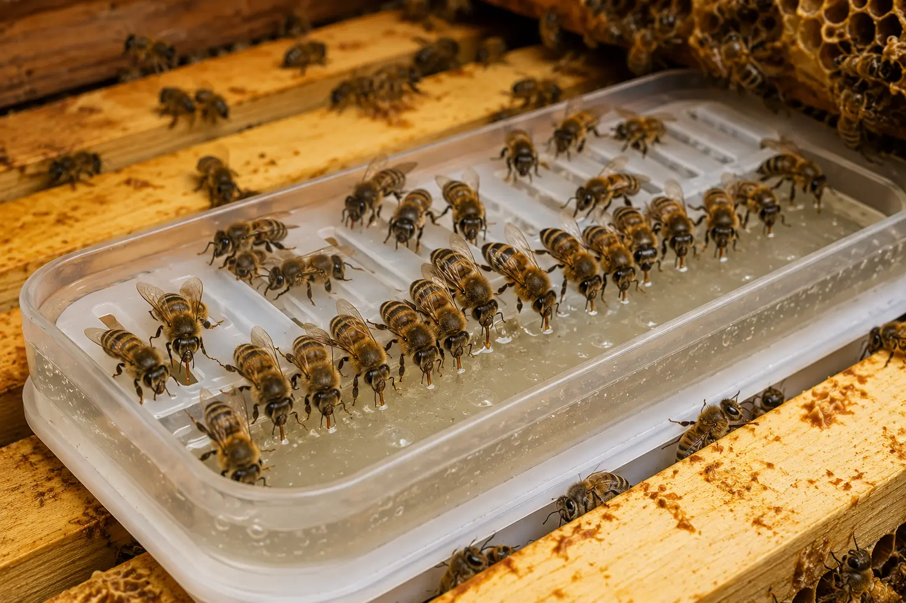
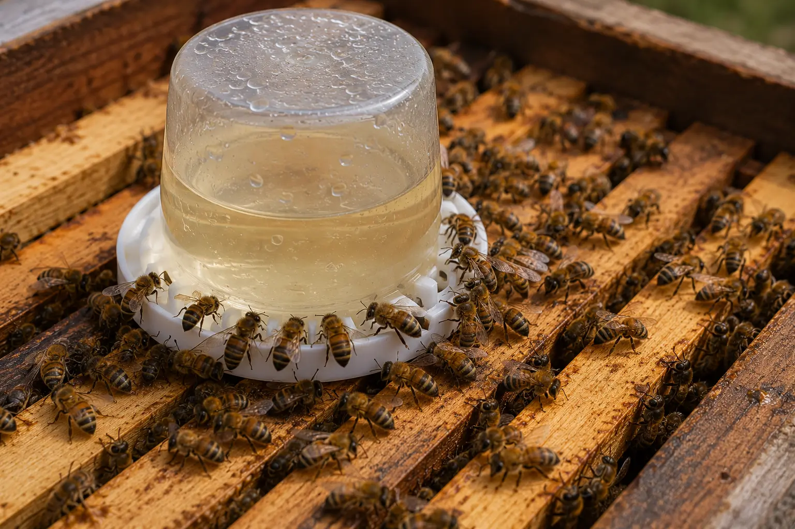
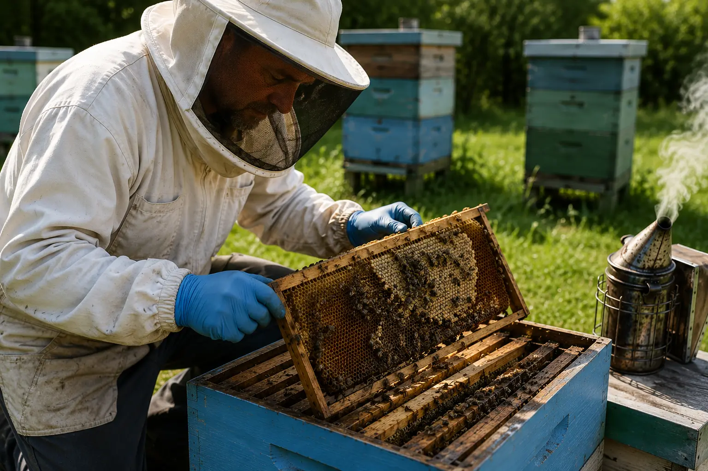

Feeding mistakes
Feeding Mistakes Beekeepers Make – Syrup, Fondant and Robbing Risks
Last updated: 15 August 2026

Feeding bees is simple in principle, but mistakes can cause serious problems. Feeding at the wrong time, using the wrong feed, spilling syrup or feeding a weak colony badly can trigger robbing, leave bees short of stores, or make a struggling colony worse.
Good feeding is not just about adding food. It is about knowing why you are feeding, what the colony needs, whether the weather is suitable, and whether the colony is strong enough to use the feed safely.
This guide covers the most common feeding mistakes UK beekeepers make and how to avoid them.
Quick list of common feeding mistakes
Feeding mistakes are extremely common in UK beekeeping because feeding decisions change throughout the year. What works during spring build-up may be completely wrong during winter, and what helps one colony may damage another. Newer beekeepers often focus only on the food itself without considering weather, colony strength, brood levels, robbing pressure or the reason feeding is needed in the first place.
One of the biggest mistakes is assuming feeding is automatically helpful. Feeding can support colony growth, prevent starvation and help weak colonies recover, but poor feeding decisions can also trigger robbing, increase stress, create damp conditions or encourage colonies to store feed where brood should be raised.
Common problems include feeding syrup too late in autumn, using the wrong syrup strength, feeding during cold weather when fondant would be safer, spilling syrup around the apiary, leaving feeders leaking or exposed, overfeeding colonies that already have enough stores, and failing to investigate why a colony is weak before adding feed.
Feeding should always match the season and the colony in front of you. A strong production colony in summer, a small nuc, a recovering swarm and a winter colony may all need completely different management decisions. Good feeding is not simply about adding sugar — it is about understanding what the colony actually needs and whether feeding will genuinely help.
Feeding syrup too late
One of the most common autumn mistakes is leaving syrup feeding too late into the season. Bees need time to take syrup down, evaporate excess moisture and store it properly before temperatures fall. If cold weather arrives too quickly, colonies may stop processing syrup efficiently, leaving feed sitting unused or poorly ripened inside the hive.
Heavy late feeding can also increase moisture inside the colony at exactly the wrong time of year. Damp winter conditions are dangerous for bees because condensation and cold can weaken the cluster and increase stress during long periods of confinement.
In the UK, many beekeepers aim to complete major autumn syrup feeding by late September or earlier depending on local weather conditions. Colonies that are still light once cold conditions arrive are often safer on fondant rather than large volumes of liquid feed.
Another problem with late feeding is that beekeepers may assume the colony is safe simply because syrup has been provided. In reality, the bees may not have processed or stored it properly. Always check whether feed is actually being taken and converted into usable stores.
Related guide: Feeding bees in the UK.
Using the wrong syrup strength

Different syrup strengths are used for different purposes, yet many feeding problems begin because the wrong type of feed is used at the wrong time of year. Thin syrup and heavy syrup affect colonies differently, and neither should be treated as a universal solution.
Lighter syrup is commonly associated with spring feeding and comb stimulation because it is easier for bees to consume quickly. Heavier syrup is generally preferred during autumn when the aim is to help colonies build winter stores before forage disappears and temperatures drop.
Problems occur when beekeepers continue feeding light syrup late into autumn or attempt to use liquid feed during cold weather when bees are no longer able to process it efficiently. Colonies may fail to store enough food properly or may become damp from excess moisture within the hive.
Fondant is often safer during winter and early spring because bees can access it directly above the cluster without needing to process large amounts of liquid. The key mistake is not simply choosing syrup or fondant — it is failing to match the feed type to the colony’s condition, the outside temperature and the time of year.
Triggering robbing by feeding badly
Feeding can unintentionally create robbing behaviour if it is handled carelessly. During nectar shortages, colonies become highly sensitive to the smell of syrup, honey and exposed stores. Even small mistakes such as spilling syrup on the hive roof or leaving wet supers nearby can attract large numbers of bees from surrounding colonies.
Weak colonies are especially vulnerable once robbing begins. Stronger colonies may rapidly overpower them, stealing stores and creating chaos at the entrance. Wasps may also take advantage of the disturbance. In severe cases, prolonged robbing pressure can contribute to colony collapse.
Leaking feeders are a major problem because they constantly spread the smell of syrup around the apiary. Feeders should fit securely and should be checked regularly for drips or cracks. Feeding inside the hive is generally safer than open feeding because it limits exposure to other colonies.
Timing also matters. Evening feeding is often preferred because flying activity is reducing and there is less immediate competition around the apiary. Weak colonies may need reduced entrances so fewer bees are required to defend the hive during periods of robbing pressure.
Good apiary hygiene is essential during feeding season. Syrup containers, wet frames, exposed comb and spilled feed should never be left sitting near hives. Once robbing behaviour escalates, it can be difficult to stop quickly.
Read more: Robbing behaviour in bees.
Overfeeding the colony
Feeding is intended to support the colony, but too much feed can create problems of its own. Colonies that receive excessive syrup may fill brood space with stored feed, leaving the queen with fewer places to lay eggs. This can slow brood expansion, disrupt colony balance and make inspections harder to interpret.
A hive packed with syrup is not necessarily a healthy hive. Newer beekeepers sometimes assume that a colony full of stored feed must be thriving, when in reality brood space may be heavily restricted or the colony may already have adequate reserves without further feeding.
Overfeeding is especially common when colonies are fed automatically without checking existing stores first. Some colonies may genuinely need support, while others already have enough food available from forage or previous feeding.
The aim should always be to meet the colony’s needs rather than continuously adding feed. Good feeding management means checking brood patterns, colony space, seasonal conditions and actual food reserves before deciding how much feed is appropriate.
Underfeeding or feeding too late
Waiting too long before feeding can leave a colony short of stores just when it needs them most. This is especially risky in late winter, early spring, during poor weather, after a nectar gap or when colonies are raising brood.
Underfeeding can lead to starvation even when the beekeeper assumed the colony had enough. Check stores, heft the hive when appropriate and respond before the colony reaches an emergency.
Read more: Starvation in bees and Isolation starvation.
Assuming all colonies need the same feed
Colonies vary. A strong colony, weak colony, nuc, new swarm and winter colony may all need different feeding decisions. A small nuc may need careful small feeds, while a strong colony may not need feeding if stores are adequate.
Weak colonies may need support, but they also need protection from robbing. Winter colonies need accessible food rather than unnecessary disturbance. Feeding decisions should always match the colony in front of you.
Related guide: Weak colony bees.
Feeding without checking why the colony is weak

Feeding is not a cure for every weak colony. If the real issue is queen failure, varroa, disease or robbing, feeding alone will not fix it.
If a colony is not improving, check queen status and brood pattern, varroa history, brood disease signs, robbing or wasp pressure, and whether the colony has enough bees to recover.
Feeding can support recovery, but it cannot replace a functioning queen, healthy brood, adequate worker numbers or disease control.
Leaving feeders on too long
Feeders should not be forgotten. Old syrup can ferment, attract pests, or encourage robbing if it leaks or remains accessible.
Check feeders regularly, remove unused syrup when appropriate, clean feeders between uses and do not leave exposed feed around the apiary.
What to do instead
Check stores before deciding to feed. Match the feed to the season and purpose. Use fondant rather than syrup in cold weather, protect weak colonies from robbing and record feeding dates and amounts.
After feeding, check whether the colony actually improves. If it does not, the problem may not be food. Look again at queen status, brood pattern, varroa, disease, robbing pressure and colony strength.
How HiveTag can help
HiveTag lets you record feeding dates, feed type, amount, colony response and stores. This makes it easier to see which colonies are using feed, which are struggling, and whether feeding is actually helping.
Learn more about HiveTag.
Feeding Mistakes FAQ
Yes. Spilled syrup, leaking feeders or exposed honey can trigger robbing, especially during a nectar dearth.
Fondant is usually safer in cold weather because bees may not be able to process syrup properly.
Yes. Too much feed can fill brood space and restrict the queen from laying.
Only if stores are low and the colony can use the feed safely. Also check queen status, varroa, disease and robbing risk.